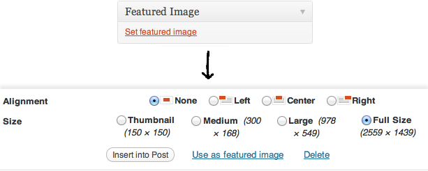

Before starting, there's a few informations you need to know, just to make everything easier.
Unlike many WordPress Themes, Retro Portfolio does not use the popular image resizing script TimThumb. The reason why I decided to drop it is pretty simple: I didn't want to rely on any external script that may compromise my users's security and I wanted to rely completely on the WordPress engine.
The difference between the two methods of resizing is that TimThumb can recreate every image on-the-fly, while WordPress creates a series of copies of your image of different sizes after you upload them. So if you have uploaded an image before installing this theme and you wish to use it for a Slide or as Featured Image for a post, that image could not have a version that fits the exact size required by the layout.
However, even if it sounds a little bit problematic, there's an easy solution. Using a WordPress plugin you can recreate every Thumbnail at any time. I've included a copy of the best Thumbnail Rebuilder around at the moment ("Ajax Thumbnail Rebuild"). Simply install it and remember to refresh your images if something doesn't look quite right.
Installing a WordPress theme is the most easy thing in the world! There are two ways to install it:
"I know what FTP is": Using your favorite FTP application, upload the "Retro"
folder in your server's /wp-content/themes folder.
Via WordPress: Go to Appearance → Install Themes → Upload and choose the "Retro.zip" file. Click "Install Now" to install the theme.
Once you have uploaded it, go to Appearance → Themes and finally activate it!
If something doesn't look quote right: only the Blog section is being displayed, please make sure to select back the "Your latest posts" option in Settings → Reading.
In the home section, you can easily customize logo, banner, ribbon and welcome text.
To hide a layout option from your website, just leave it blank and it will disappear. Most of the options are displayed only if necessary.
Adding items to a Portfolio is just like adding Posts to a Blog. All you have to do is "open" the Portfolio Post Type and hit the "Add New Item" link.
The Featured Image is basically the picture that will be displayed in the Portfolio to represent your item. To apply it, simply click the "Set Featured Image" link located under the "Featured Image" block. A Lightbox will appear, now choose your image, select a size (usually "Full Size") and click the "Use as featured image" link.
This theme gives you the chance to assign a Tag or "Filter" to your Portfolio Items so that your users can navigate your Portfolio and choose to filter your items basing on the category you have assigned to them (e.g. Logos, Interfaces, Prints).
To assign a Filter to your Portfolio Item, visualize it in the edit mode, and start adding them as you would do with Tags on normal WordPress Posts.
A standard Media Item consists of a Featured Image and a Title. When an item is clicked, the content that will be displayed inside the Lightbox depends on the Post Format selected and on the url entered inside the "Media" box.
By default every item will use its Featured Image as Lightbox Content, so to create an Image Item all you have to do is select the "Standard" Format and assign a Featured Image to your Portfolio Item. You can also enter a different image url in the "Content Url" option of the "Media" box if you wish to display a different image.
This theme lets you to display Youtube and Vimeo inside every Lightbox (posts as well). To add a Video Item, choose the "Standard" Format and simply enter your Youtube or Vimeo url in the "Content Url" option of the "Media" box.
To link one of your items to any web page, you can enter your custom url inside the "Content Url" option of the "Media" box, and when clicked, your item will automatically point to that page.
A Quote Item will simply display the content you will enter inside the item's editor. After choosing the "Quote" Format, the WordPress Editor and the Excerpt boxe will appear, and the Title you have entered will be used as title for the Quote Lightbox, the Excerpt as sub-title and the Editor's content as content.
Audio Items are pretty much like Quote Items, but they also let you to enter an audio file (.mp3 type) inside the "Media" box. When opened, the Item's Lightbox will display a HTML5 Audio Player featuring your audio file after its content.
Retro Portfolio includes 5 Widgets that will help you to build your website with just a few clicks.
Using this Widget you can display the latest posts from your blog, and order them using 5 criteria: Post ID, Title, Random, Date and Popularity (based on the comments number).
This Widget with display a custom Google Map image in your Sidebar depending on the location you will enter.
With this Widget you can add any Youtube or Vimeo Video inside your page.
This Widget lets you display the latest Tweets from the Twitter account you will enter.
Using this Widget you can show the latest photos from your Flickr account.
Retro includes a few Extra Options that will make the whole experience of using the theme a lot easier. You can find all Extras in the Options Panel, under the "Extras" tab (Appearance → Retro Portfolio → Extras).
This function gives you the possibility to exclude any Post Category you want from all user-accessible areas of your website.
If you like to keep your themes up-to-date, you can choice to enable the Updates Notification, so when a new version of Retro Portfolio will be available you'll be notified.
Retro Portfolio is translation-ready. That means that editing the ".po" files included inside the Retro/languages/ folder you can translate the theme in any other language.
When editing a language, do not remove strings like "%s" or "%1$". These are strings that get automatically
replaced with dynamic or more complex content.
To build this theme, I've used some external sources from great people kind enough to share their work.
Once again, thank you for buying my theme. If you have any questions that this file couldn't answer, don't hesitate to contact me on pasqualevitiello@gmail.com.